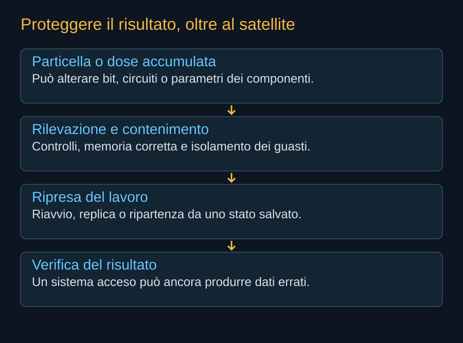

Una macchina può restare accesa e produrre un risultato sbagliato. Nel calcolo orbitale questa possibilità merita la stessa attenzione del guasto visibile. Una particella energetica può alterare uno stato della memoria o disturbare un circuito; l’esposizione accumulata può modificare le proprietà dei componenti. Il sistema deve riconoscere errori, limitarne la propagazione e capire quando un risultato non sia più affidabile.
Dose ed eventi singoli
La dose totale descrive un’esposizione accumulata. Gli effetti da evento singolo riguardano l’interazione di una particella con un componente. Alcuni possono essere transitori, altri provocare condizioni elettriche pericolose o danni permanenti. Le due categorie richiedono prove e mitigazioni differenti: sopportare una dose prevista non dimostra la resistenza a ogni evento singolo.
La quota e l’inclinazione cambiano l’ambiente. Anche durata della missione, schermatura e disposizione dei componenti contano. “Resistente alle radiazioni” non è un’etichetta universale che consenta di usare un dispositivo in qualsiasi orbita. La verifica deve essere riferita alle condizioni che il veicolo incontrerà e alle conseguenze accettabili del guasto.


Correggere non significa rendere impossibile
La memoria con codici di correzione può riconoscere e riparare certe alterazioni. I controlli periodici possono cercare errori prima che si accumulino. Le protezioni elettriche possono interrompere una corrente anomala. Le repliche possono confrontare risultati o permettere di continuare il lavoro su un’altra unità. Ogni misura ha un campo di efficacia e un costo in hardware, energia o tempo.
Un errore nel parametro di un modello può produrre una risposta plausibile ma diversa da quella attesa. Un errore in una simulazione può attraversare molti passaggi prima di emergere. Il controllo deve quindi considerare il lavoro del cliente, oltre allo stato del computer. Non tutte le applicazioni permettono di riconoscere un risultato errato guardandone il contenuto.

Ripartire senza ricominciare tutto
Per attività lunghe, salvare periodicamente uno stato consente di riprendere dopo un’interruzione. Il salvataggio occupa memoria, rete e tempo. Se gli errori sono frequenti, il lavoro perso fra due salvataggi può essere importante; se i salvataggi sono troppo frequenti, aumenta il tempo speso a proteggere il lavoro invece di eseguirlo. La scelta dipende da misure reali di affidabilità e costo.
Le prove con hardware commerciale sulla ISS hanno esplorato anche tecniche per mitigare e recuperare errori. Non definiscono però il comportamento di Vera Rubin su AI1. Per il nuovo payload servono dati sui componenti effettivi, sul loro circuito e sulle condizioni di missione. L’esperienza precedente aiuta a formulare domande e architetture di protezione.
Una protezione indipendente per il veicolo
Il controllo orbitale dovrebbe poter continuare anche se il payload si riavvia o viene isolato. La capacità di ridurre il calcolo protegge il satellite quando un’anomalia elettrica o termica minaccia la missione. Un progetto commerciale deve accettare di perdere temporaneamente ricavi per evitare di perdere controllo e possibilità di dismissione.
La misura più utile nelle prove sarà quindi un insieme di dati: errori riconosciuti, errori non corretti, interruzioni, lavoro ripetuto e perdita definitiva di capacità. Un singolo benchmark riuscito non racconta questa storia. L’affidabilità informatica deve diventare una prestazione documentata, insieme a potenza e velocità.
Fonti pubbliche e tracce
- NASA, effetti delle radiazioni sull’avionica. Dose totale, eventi singoli e tecniche di mitigazione. Non determina il tasso di guasto dei processori scelti per AI1.
- NASA NESC, assicurazione di resistenza alle radiazioni. 2022: definizione dell’ambiente, test dei componenti e progettazione del sistema. L’orbita e la durata modificano i requisiti.
- NASA, esperimenti della missione NG-15. 2021: Spaceborne Computer-2 e calcolo locale. Non è una prova del costo di un cloud orbitale.
- NVIDIA, SpaceXAI e prima generazione Starmind. 24 agosto 2026. Conferma l’adattamento di Vera Rubin NVL72; non pubblica una distinta completa del satellite.